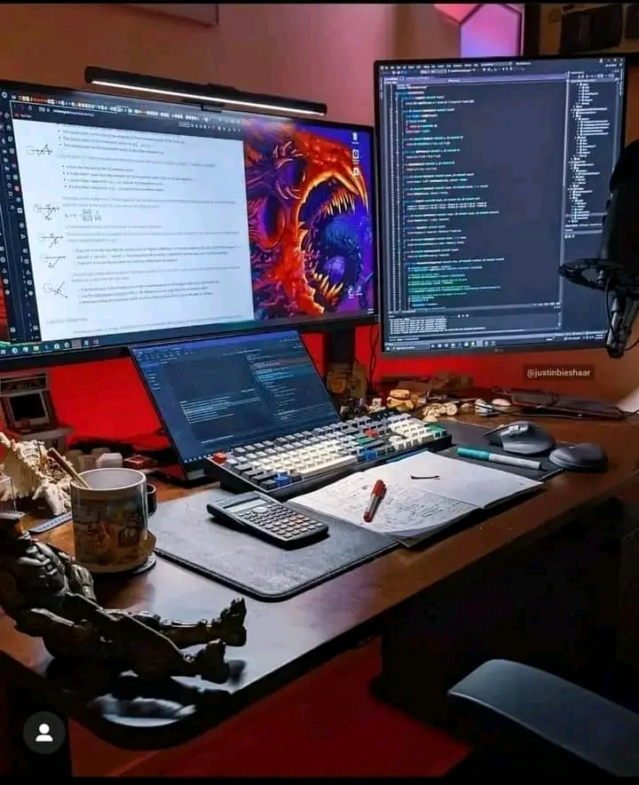
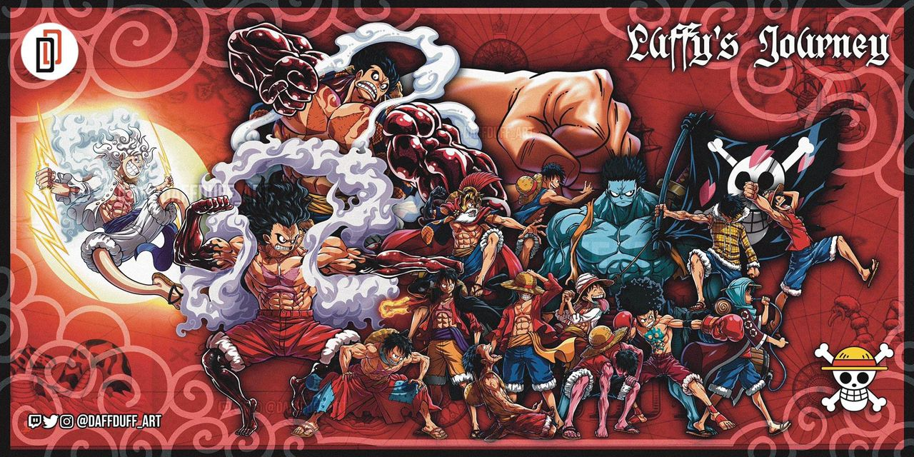
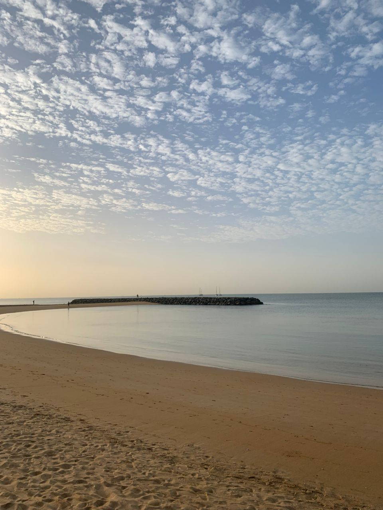

Le footBall est un sport que je pratique depuis mon jeuene âge mais malheureusement je l'ai pas trop mis en avance dans mes ambitions
J'ai gagné mon premier trophé avec mon équipe l'Amical de Mbour à l'Université Iba dDer Thiam de Thiès lors des tournoi inter-amical.
J'ai joué 04 match comme ailier gauche et droite et j'ai marqué un seul but.
Amoureux de l'informatique depuis que j'ai eu mon Bac pendant les vacs je passais mon temps à apprendre les outils informatiques
Notamment Micrososft Office. Ensuite à l'Université j'ai découvert le Developpement Web qui est devenu un Amour pour moi et je souhait devenir
Un As de l'informatique au Sénégal en créant bcp d'applications et de Sites Web dynamique


Pour un voyage vers d'autre univers j'ai choisi les animés japonnais.
Avec les Manga j'ai développé beaucoup de reflexions car dans chaque animés l'objectifs est de trouver les moyens de sortir d'un impass ou de gagner à un duel
Mes meilleurs animés sont : One Piece, SNK, MHA, Naruto, JJK, Demons Slayer .... Y'a n'en bcp et sont tous super coool
Je passe mon temps à méditer sur ce qui nous pousse à devenir meilleur et les choses que l'on devrait éviter pour ne pas plonger dans ce qui pourrait nous nuire
I'm a ZenBoy
